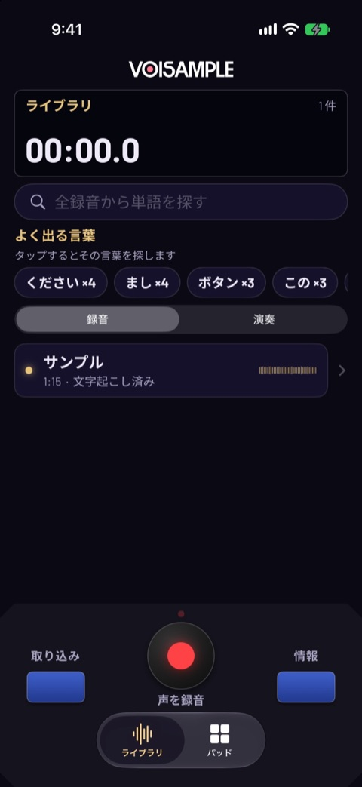
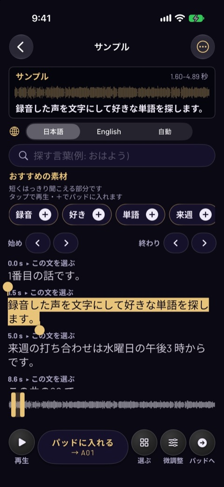
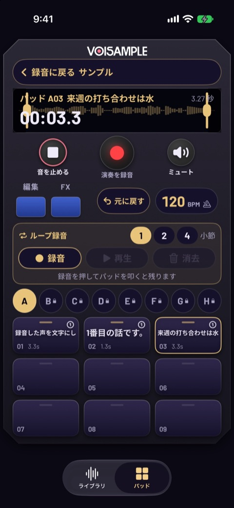
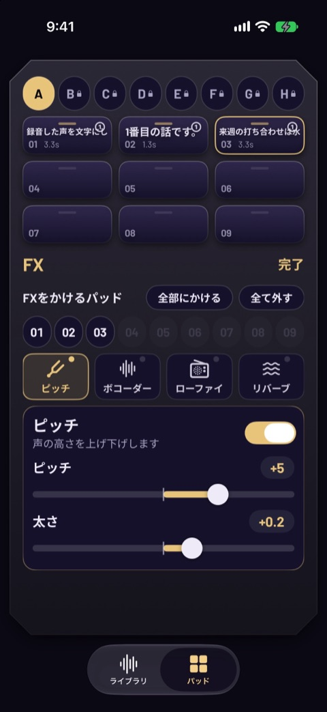
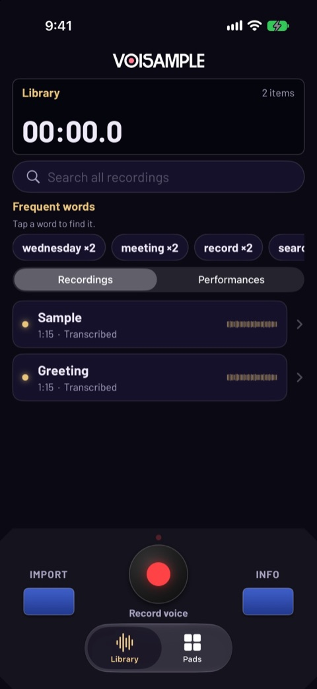
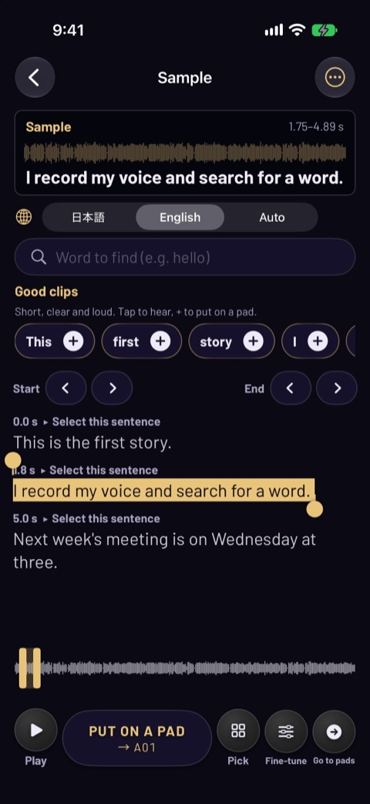
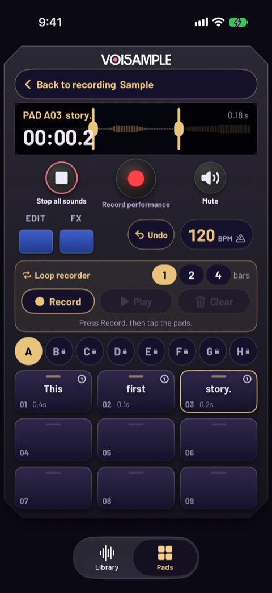
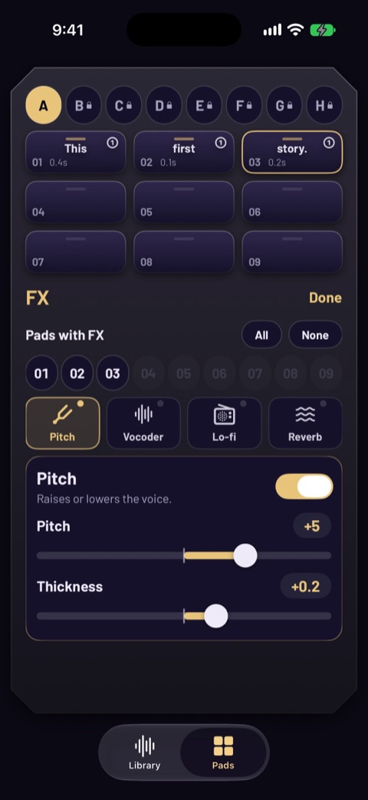

Voisample
録音した
探した
あなたの
An iPhone app that turns your recordings into text on the device.
Search a word, put it on a pad, and play it.
Your voice never leaves your iPhone.
使い方
- 声を
録る その・取り込む 場で 録音するか 音声や 動画の ファイルを 取り込みます。
ボイスメモなど他の アプリの 共有メニューからも 送れます。
録音は自動で 文字になります。 - 言葉で
探して 聞きたい選ぶ 言葉を 入力すると 出てくる 場所がすべて 見つかります。
文字をタップして つまみで 範囲を 広げたり 文ごとに 選んだりもできます。 - パッドに
入れて 切り出した鳴らす 音を 9個の パッドに 入れて 叩きます。
1回だけ鳴らすか くり返すかは パッドごとに 選べます。
ピッチ ボコーダー ローファイ リバーブの4つの エフェクトも 使えます。 - 録音して
残す ループを回しながら 演奏を 録音し 名前を 付けて 保存します。
WAV で保存・共有できます (Pro)。
静かな
How to use
- Record or importRecord on the spot or import an audio or video file. You can also send audio from other apps such as Voice Memos. Your recording turns into text automatically.
- Search and selectType a word and see every place it appears. You can also tap the text and widen the range with the handles, or select by sentence.
- Play it on padsPut the clips on nine pads and tap them. Each pad plays once or loops. Four effects are available: pitch, vocoder, lo-fi and reverb.
- Record and saveRecord your performance over a loop and save it with a name. Save or share it as WAV (Pro).
画面 / Screenshots
日本語




English




無料と Pro / Free and Pro
最初の
The first nine pads are free. Pro is a one-time purchase. No subscription and no ads.
| 無料 / Free | Pro | |
| パッド Pads | 9 (A) | 63 (B–H) |
| 録音・取り込み Recording | 3分 / 3 min | 30分 / 30 min |
| 演奏の Performance | 3分 / 3 min | 30分 / 30 min |
| WAV の WAV export | — | ✓ |
ループ録音と
Loop recording and effects are free. Requires iPhone with iOS 26 or later.